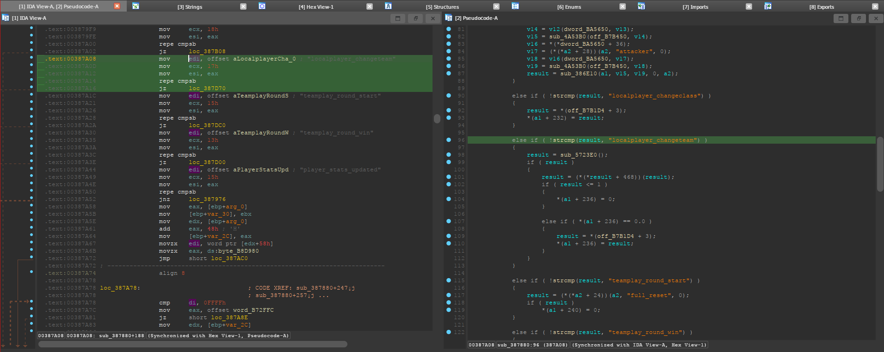
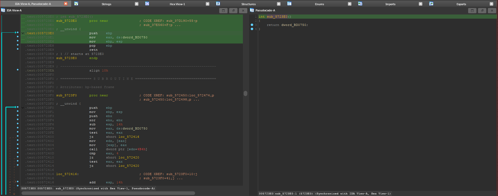
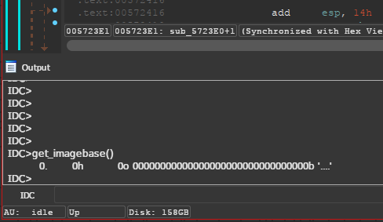

Finding the local player offset in source games
Table of Contents
1. Introduction
This short article shows how to get the offset for the local player in Source 1 games. This has been tested in the GNU/Linux version of Counter-Strike: Source, but it should be work in most Source 1 games.
2. Finding the offset
The offset is located inside the client.so shared object, located in
<GAME-DIR>/cstrike/bin/. In this case I will use IDA Pro to analyze it, but you
should be able to follow these steps with most reverse engineering tools.
Open the “Strings” sub-view in IDA with Shift+F12, and search for the string
localplayer_changeteam with Ctrl+F. Double click the result, press X and jump
through its x-refs until you see something like this.

The left split shows the disassembly in text mode, and the right split shows the decompiler, which you can open with F5.
This code corresponds to the CAchievementMgr::FireGameEvent function, as you can
see in the leaked CS:GO source code.
The call to C_BasePlayer::GetLocalPlayer is sometimes optimized to a simple mov
instruction. If that’s the case, you can use that offset directly. Otherwise,
double-click on the function (sub_5723E0) and you will see the offset there.

That 0xBD0750 is your offset. Make sure you subtract the ImageBase returned by
get_imagebase(), in my case it was zero.

3. Reading from an external process
I will be doing this from GNU/Linux, because it’s what I used for this tutorial.
First, you will need to get the real virtual address used by the hl2_linux
process. You can use my libsigscan_get_module_bounds function from my libsigscan
repository, which parses the /proc/PID/maps file. Once you get the base address
for client.so, you can add the offset we found in the previous step.
To read from that address, since we are in an external process, you will need to
use a function like process_vm_readv.
#include <stdlib.h> /* exit() */ #include <sys/uio.h> /* process_vm_readv() */ #include <errno.h> /* errno */ void readProcessMemory(pid_t pid, void* addr, void* out, size_t sz) { /* The function expects an array, even though our array has one element */ struct iovec local[1]; struct iovec remote[1]; local[0].iov_base = out; local[0].iov_len = sz; remote[0].iov_base = addr; remote[0].iov_len = sz; if (process_vm_readv(pid, local, 1, remote, 1, 0) == -1) { fprintf(stderr, "Error reading memory of process with ID %d. Errno: %d", pid, errno); exit(1); } }
You can then call it with the following.
void* localPlayer_ptr = BASE + OFFSET; uintptr_t localPlayer; readProcessMemory(PID, localPlayer_ptr, &out, sizeof(uintptr_t));
To get the PID of the game, you can use my libsigscan_pidof function.
#include <stdio.h> /* fopen(), FILE* */ #include <stdlib.h> /* atoi() */ #include <string.h> /* strstr() */ #include <dirent.h> /* readdir() */ int pidof(const char* process_name) { static char filename[50]; static char cmdline[256]; DIR* dir = opendir("/proc"); if (dir == NULL) return -1; struct dirent* de; while ((de = readdir(dir)) != NULL) { /* The name of each folder inside /proc/ is a PID */ int pid = atoi(de->d_name); if (pid <= 0) continue; /* See proc_cmdline(5). You can also try: * cat /proc/self/maps | xxd */ sprintf(filename, "/proc/%d/cmdline", pid); FILE* fd = fopen(filename, "r"); if (fd == NULL) continue; char* fgets_ret = fgets(cmdline, sizeof(cmdline), fd); fclose(fd); if (fgets_ret == NULL) continue; /* We found the PID */ if (strstr(cmdline, process_name)) { closedir(dir); return pid; } } /* We checked all /proc/.../cmdline's and we didn't find the process */ closedir(dir); return -1; }
The complete and updated functions can be found in my cs-source-external repository.
4. Credits
- MarkHC for his post in UnknownCheats about getting the local player.
- My libsigscan library for the functions.